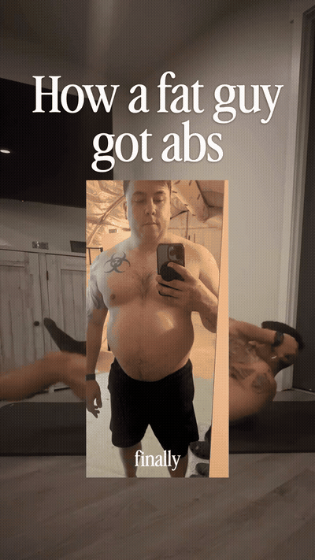
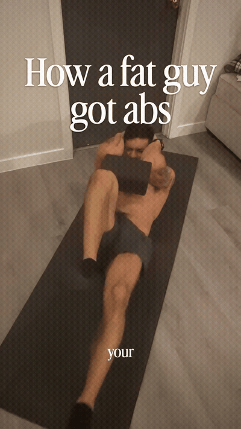
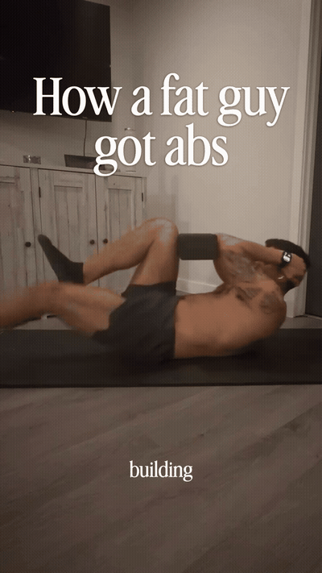
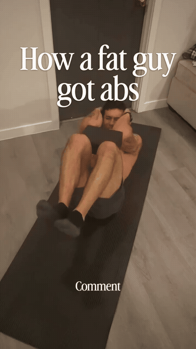

Lie on your back, yoga block squeezed firmly between your feet, knees bent. The squeeze is the exercise — it starts before the first rep.

Extend the legs out slowly while squeezing the block, then return. The block stops you throwing your legs around — the core does the moving.

The reason it works: the abs must brace while the body moves through extension. Hold the extended position a beat before returning to light up the whole trunk.

This is a keep-in-rotation move, not a one-off: core work 3–4 times a week, build the abs thicker, and they're waiting when you lean out.
The block is the coach. Squeezing it forces continuous core tension — the failure mode it prevents is throwing your legs around with the hip flexors while the abs guest-star.
Bracing through extension builds a trunk, not just a six-pack. The abs stabilize the spine while the body moves through extension — strength that transfers into everything else you do.
Frequency beats novelty. One move, kept in rotation 3–4× a week, outbuilds a different ab exercise every session.